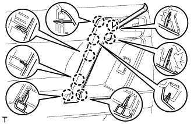
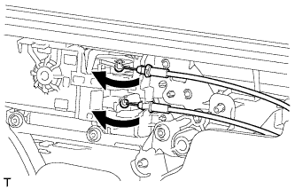
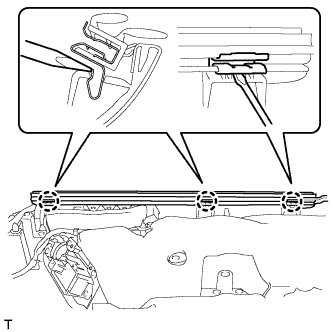
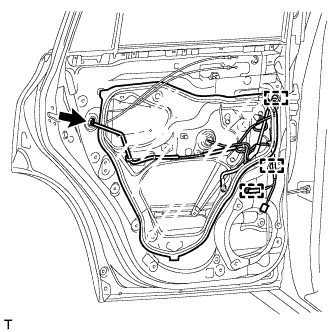
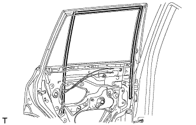
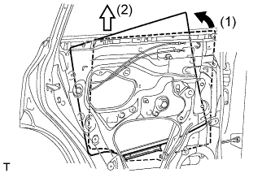
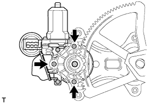

ЭЛЕКТРОДВИГАТЕЛЬ СТЕКЛОПОДЪЕМНИКА ЗАДНЕЙ ДВЕРИ > СНЯТИЕ |
| 1. ОТСОЕДИНИТЕ ПРОВОД ОТ ОТРИЦАТЕЛЬНОГО (-) ВЫВОДА АККУМУЛЯТОРНОЙ БАТАРЕИ |
| 2. СНИМИТЕ ДЕРЖАТЕЛЬ ВНУТРЕННЕЙ РУЧКИ ЛЕВОЙ ДВЕРИ № 2 |
 |
С помощью съемника молдингов A освободите 3 захвата и снимите оправу внутренней ручки задней двери, как показано на рисунке.
| 3. СНИМИТЕ ЛЕВУЮ НАКЛАДКУ ВЕРХНЕГО ПОРУЧНЯ |
|  |
С помощью съемника молдингов А освободите 8 захватов и снимите крышку верхнего поручня.
| 4. СНИМИТЕ ПАНЕЛЬ ОБЛИЦОВКИ ЛЕВОЙ ЗАДНЕЙ ДВЕРИ |
 |
Выверните 3 винта.
С помощью съемника фиксаторов расцепите 9 фиксаторов.
 |
Вытяните панель облицовки задней двери в сборе в направлении, указанном стрелкой на рисунке.
Поднимите панель облицовки задней двери в сборе, чтобы освободить 4 захвата, и снимите панель облицовки задней двери вместе с внутренним уплотнителем стекла задней двери.
|  |
Отсоедините трос дистанционного управления замком задней двери в сборе и внутренний трос замка задней двери в сборе.
 |
Отсоедините все разъемы.
| *A | Для моделей с 14 динамиками |
| *B | Для моделей с 9 динамиками |
 |
С помощью отвертки освободите захват и снимите зажим.
| 5. СНИМИТЕ ВНУТРЕННИЙ УПЛОТНИТЕЛЬ СТЕКЛА ЛЕВОЙ ЗАДНЕЙ ДВЕРИ |
|  |
С помощью отвертки освободите 3 захвата и снимите внутренний уплотнитель стекла задней двери с панели облицовки задней двери в сборе, как показано на рисунке.
| 6. СНИМИТЕ ЗАДНИЙ ДИНАМИК |
 |
Отсоедините разъем.
Выверните 3 винта.
Освободите 2 захвата и снимите задний динамик.
| 7. СНИМИТЕ КРЫШКУ ТЕХНОЛОГИЧЕСКОГО ОТВЕРСТИЯ ЗАДНЕЙ ДВЕРИ |
|  |
Отсоедините разъем.
Освободите 3 зажима, переместите жгут проводов, чтобы он не мешал, и снимите крышку технологического отверстия.
| 8. СНИМИТЕ НАПРАВЛЯЮЩУЮ СТЕКЛА ЛЕВОЙ ЗАДНЕЙ ДВЕРИ |
|  |
Снимите направляющую стекла задней двери.
| 9. СНИМИТЕ ПОПЕРЕЧИНУ ОКНА ЛЕВОЙ ЗАДНЕЙ ДВЕРИ В СБОРЕ |
 |
Ослабьте болт временного крепления.
| *1 | Болт временного крепления |
Выверните 2 болта и винт.
Снимите поперечину окна задней двери в сборе.
Выверните болт временного крепления из поперечины окна задней двери в сборе.
| 10. СНИМИТЕ НЕОПУСКНОЕ СТЕКЛО ЛЕВОЙ ЗАДНЕЙ ДВЕРИ |
 |
Снимите неопускное стекло и уплотнитель задней двери как единый узел, см. рисунок.
| 11. СНИМИТЕ СТЕКЛО ЛЕВОЙ ЗАДНЕЙ ДВЕРИ В СБОРЕ |
Подсоедините провод к отрицательному (-) выводу аккумуляторной батареи и разъему электродвигателя стеклоподъемника задней двери.
Подсоедините переключатель электрического стеклоподъемника в сборе и сместите стекло задней двери таким образом, чтобы показались болты стекла двери.
Отсоедините переключатель электрического стеклоподъемника и разъемы электродвигателя стеклоподъемника задней двери.
Отсоедините провод от отрицательного (-) вывода аккумуляторной батареи.
 |
Снимите стекло задней двери в сборе со стеклоподъемника задней двери в сборе, как показано на рисунке.
|  |
Извлеките стекло задней двери в направлении, указанном на рисунке стрелками, и в порядке, обозначенном на рисунке.
| 12. СНИМИТЕ СТЕКЛОПОДЪЕМНИК ЛЕВОЙ ЗАДНЕЙ ДВЕРИ |
 |
Ослабьте болт временного крепления.
| *1 | Болт временного крепления |
Выверните 3 болта.
Снимите стеклоподъемник задней двери в сборе.
Выверните болт временного крепления из стеклоподъемника задней двери в сборе.
| 13. СНИМИТЕ ЭЛЕКТРОДВИГАТЕЛЬ СТЕКЛОПОДЪЕМНИКА ЛЕВОЙ ЗАДНЕЙ ДВЕРИ |
|  |
Выверните 3 винта с помощью торцевого ключа "TORX" T25 и снимите электродвигатель стеклоподъемника.